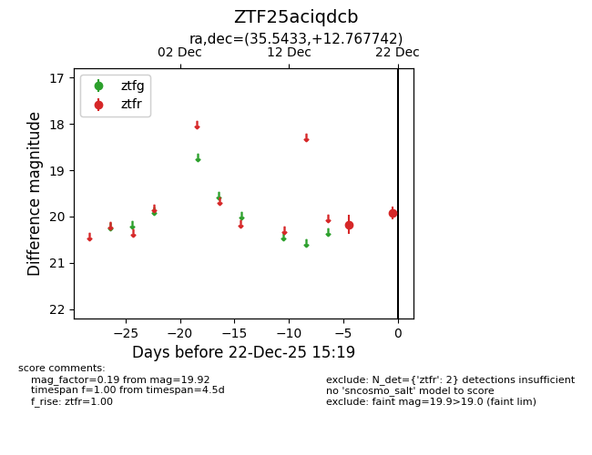
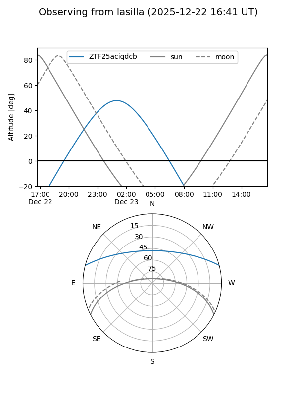
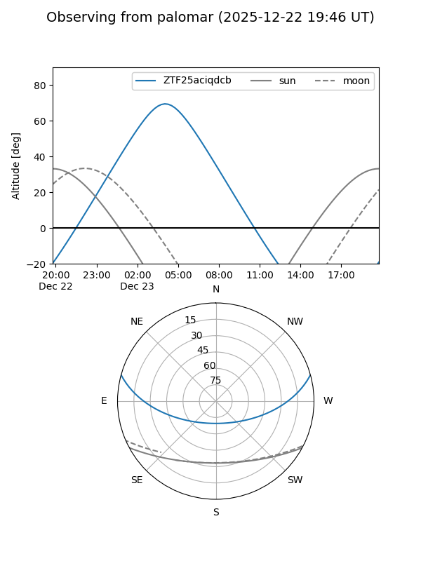
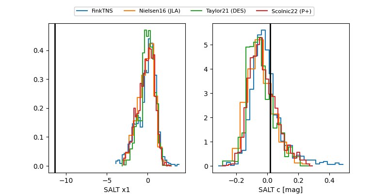

ZTF25aciqdcb
Target ZTF25aciqdcb at 2025-12-22 15:21
Aliases and brokers:
FINK: fink-portal.org/ZTF25aciqdcb
Lasair: lasair-ztf.lsst.ac.uk/objects/ZTF25aciqdcb
ALeRCE: alerce.online/object/ZTF25aciqdcb
alt names
ZTF25aciqdcb (ztf,fink_ztf)
Coordinates:
equatorial (ra, dec) = 35.5433,+12.76774
equatorial (HMS+DMS) = 02:22:10.40,+12:46:03.87
galactic (l, b) = (154.7154,-44.43252)
Flags:
Photometry:
last ztfr=19.92
2 ztfr detections
Lightcurve

Visibility


Additional plots
